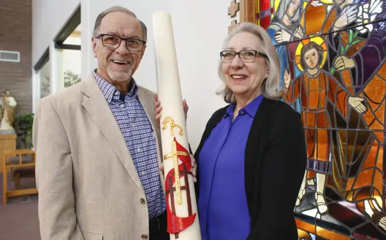
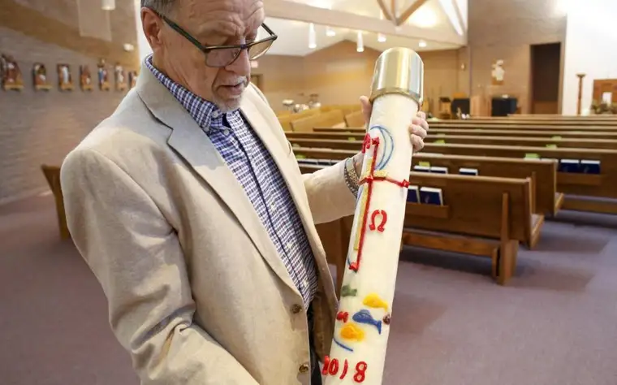
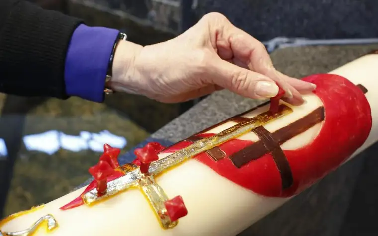

Swede and Linda Stelzer hold the Paschal candle Wednesday, April 3, they made for St. Francis de Sales Catholic Church in Moorhead. It is the 35th candle they have made for the church. Michael Vosburg / Forum Photo Editor
MOORHEAD — To those on the outside, it’s just a candle. To parishioners, it’s an Easter, or Paschal, candle with significance. But to Linda and Swede Stelzer, it’s a labor of love.
For 35 years, they’ve been working together to create an Easter candle for year-round use at Moorhead’s St. Francis de Sales Catholic Church. But this year, they’ll be putting away the wax and wicks for good.
“It’s mixed emotion,” says Swede of ending the decadeslong project, “but at some point in time, you’ve got to say enough is enough.”
While Swede leads the candle-making process, and Linda handles its artistic design, each helps in the processes of the other. The endeavor started when the Rev. Mike Sullivan began as pastor there in the early 1980s.
“He was a rookie priest, and we were his first parish,” Swede says, noting that Sullivan, in his 30s at the time, had arrived in his pastoral role after working as a radio DJ and hotel, bar and restaurant manager in Redwood Falls, Minn. Sullivan had some grand ideas, Swede says. Rather than order a Paschal candle, which can be expensive, he asked his parishioners to make one.
Learning the trade
Swede notes that he didn’t initially consider church law insisting on certain requirements, like the candle needing to be at least 51 percent beeswax and from virgin bees, symbolizing the purity of Christ.
“He also didn’t know colored candles are only skin-deep,” Swede adds, commenting on an early idea to collect everyone’s used candles and melt them together; nor that the wick needed help to stay centered during the drying process. It all became part of a 35-year process of learning and perfecting.

Swede Stelzer holds the liturgical candle he and his wife made last year for St. Francis de Sales Catholic Church in Moorhead. Michael Vosburg / Forum Photo Editor
Initially, “Swede didn’t know what the heck he was doing,” says their friend Jim Dottenwhy, a current parishioner and former liturgy director. “I’m sure he told you all the stories, of them pouring wax on the floor, and the early molds they tried to figure out — some of them leaked.”
Swede recalls trying to use PVC pipe as a mold. “We couldn’t get the candle out of the mold; the hot wax had warmed the pipe, and the little bit of bend kept it from coming out.”
He used a circular saw to cut the pipe’s walls. “We had wax ‘dust’ that got everywhere,” he says. “Finally, we started learning the science, but we didn’t know anything in the beginning.”
The pouring of the candle takes three or four days, Swede says, using 160- to 170-degree wax. “Once I get the candle poured, then my job is done.”
Along with learning about candle-making, Dottenwhy shares, the couple researched the Paschal candle’s history. And for the past 30 years, he’s watched, with others, the new candle emerge, for the first time publicly, during the Easter vigil service.
“Everything on the candle is significant,” Dottenwhy says. “The priests are always excited to see what the theme will be. They usually see it before the (vigil) Mass, but not until rehearsal.”
The gift of the candle comes in its creativity, symbolism and utilitarian purpose.
“We use it for liturgical functions, funerals and baptisms, other holy days, things like that,” Dottenwhy says. “It serves the parish, and I think making it has become a ministry.”
It’s also rare. “Over the years, I’ve read of a handful of other parishes that make their own (Easter) candles,” he says, “but I don’t know of anyone else in this area that does.”
ARCHIVE: Read more of Roxane B. Salonen’s Faith Conversations
Symbolic work
Despite some help and input, the Stelzers have been the main creators. “Not that a woman couldn’t pour it, but… it helps to have someone who is able to do the bulkier work,” Dottenwhy says, noting that Linda’s artistry adds the “soul” to the candle. “The two certainly complement each other very well.”
Observing that Linda tends to do her best work “under a rushed time,” Dottenwhy says often “it’s the night before and she’s just finishing up… I’m sure the prayers go back and forth between them, as far as praying for each other to get the candle made and done.”
Swede says he’s learned something new each time over the past 35 years, and Linda has, too.
Linda calls her design-making “a Lenten process.”
“It’s a spiritual process for me to think about what can touch people or capture their interest to symbolize Christ and the Easter season,” she says.
She’s used various materials for the design, beginning on paper and transferring that onto the candle, always incorporating something natural into it — like the year she adhered “wheat hair” from an actual shaft.
“I made the very first candle out of ribbon and little beads,” she says. Later, she learned how to imprint her design into, or paint onto, the wax.
But this year has been especially difficult, she admits, not only because it’s their last try, but due to the church’s dramatic roof collapse from heavy snow on March 10, which evicted them from their parish home and produced an additional burden of accurately representing this natural disaster and its effect on the parish.
“I’m still struggling with this design. It doesn’t feel right yet,” she says, noting that, with this near-tragedy, she has felt the losses, but even more, the blessings of lives spared. To that end, she’s incorporated three crosses with a mantle over them. “I just kept thinking, ‘His mantle over us is love.’”

Linda Stelzer places incense sticks in the liturgical candle made for St. Francis de Sales Catholic Church in Moorhead. Michael Vosburg / Forum Photo Editor
Together, they mention the incense sticks stuck into each Paschal candle.
“Notice where they are placed,” Linda says, pointing to a picture of one of their earlier creations. “The head, the heart, the hands and the feet — those are the wounds of Christ.”
And, it seems clear, the wounds of all who follow Christ, through his crucifixion and into the light of resurrection.
[For the sake of having a repository for my newspaper columns and articles, I reprint them here, with permission, a week after their run date. The preceding ran in The Forum newspaper on April 21 (Easter), 2019.]